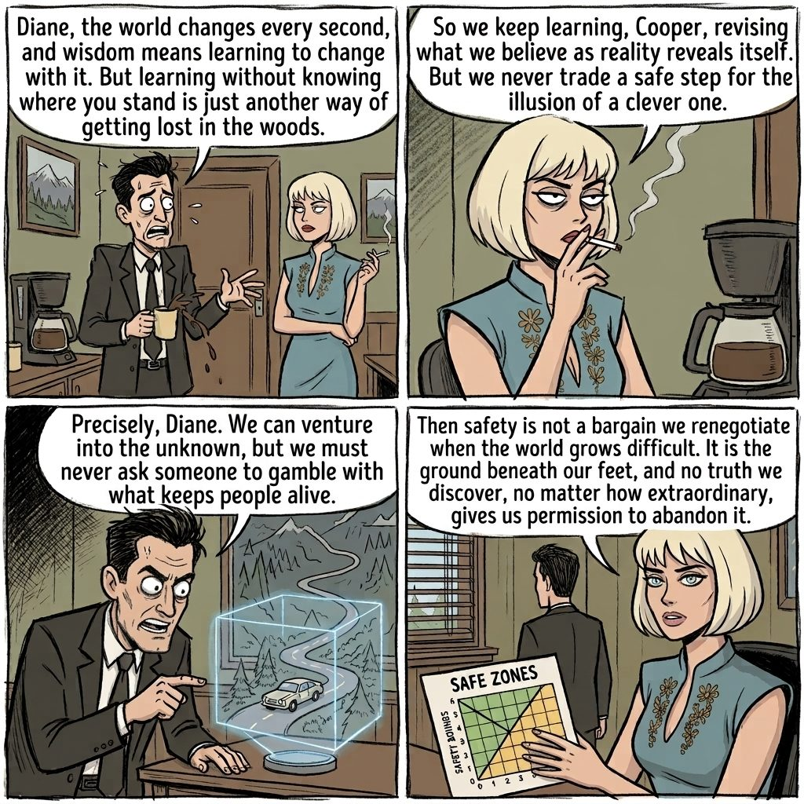
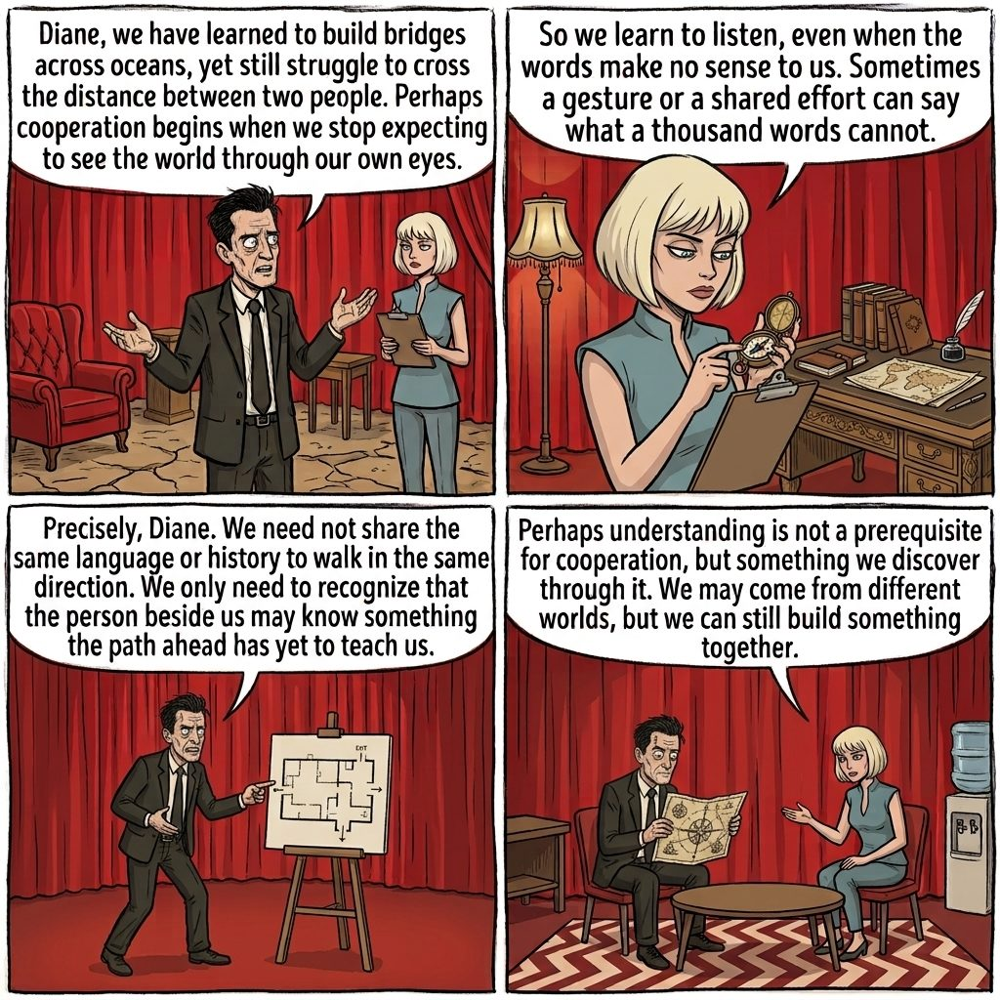
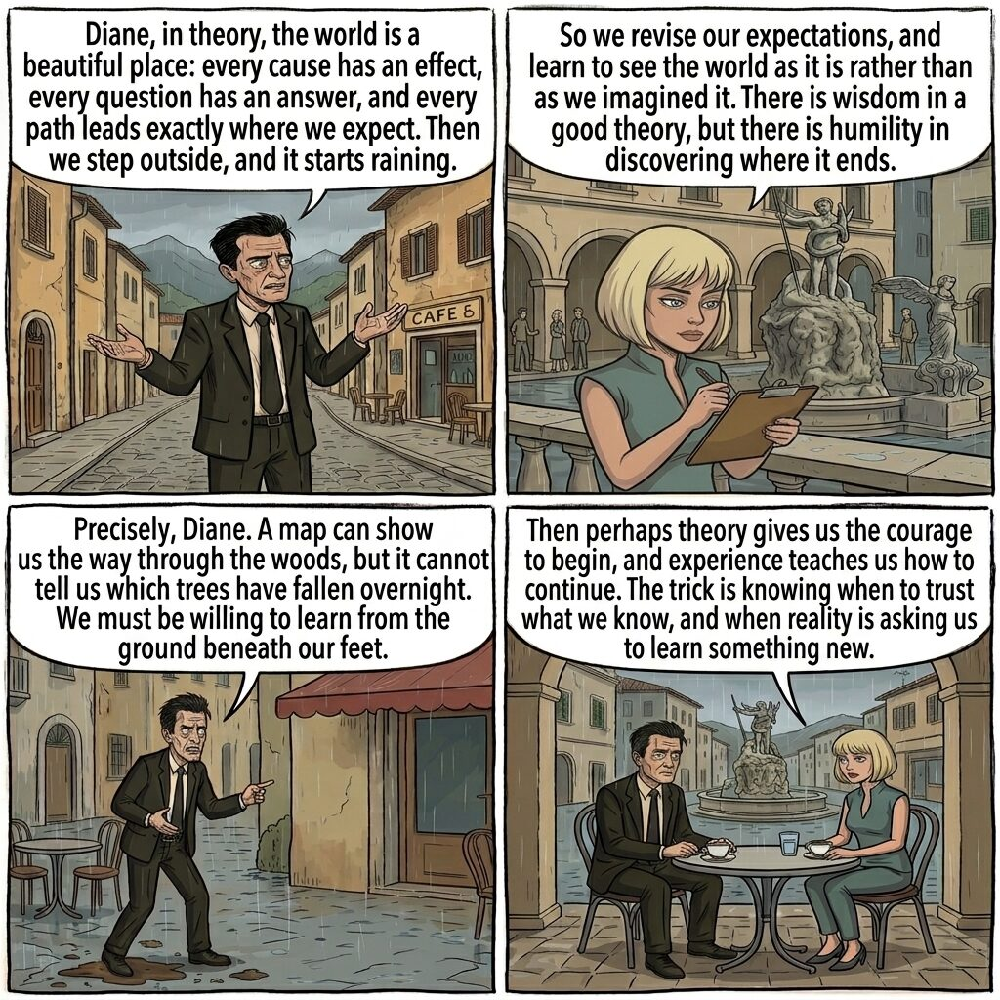
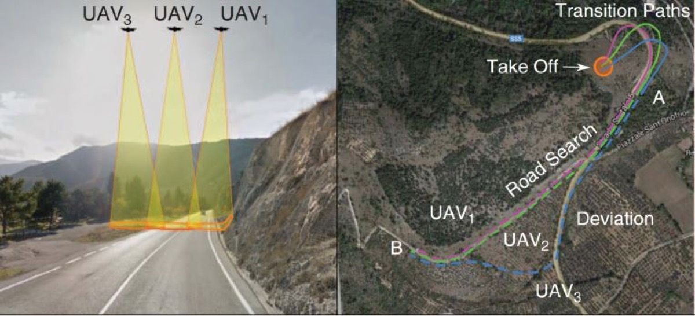

Research
I develop the control and decision-making foundations that allow teams of autonomous robots to remain reliable when their models, information, and operating environments cannot be trusted.
My research integrates adaptive control, cooperative decision-making, and safety assurance to enable reliable autonomy in uncertain environments. I develop the theoretical foundations, computational methods, and experimental validation needed to move from guarantees for individual robots to resilient coordination of heterogeneous autonomous teams.
Resilient Cooperative Autonomy in Complex Environments
The program has three connected thrusts. Thrust 1 makes individual vehicles dependable when their dynamics are uncertain. Thrust 2 builds team-level coordination on those vehicle-level properties when information and communication are also unreliable. Thrust 3 tests both on hardware and in realistic conditions, and the gaps it exposes become new questions for the theory.
Thrust 1
Learning and adaptation with guarantees
A vehicle’s dynamics change during a mission: payloads and environmental loads such as wind, currents, and waves vary, actuators saturate or behave nonlinearly, and operating conditions drift from those assumed at design time. This thrust develops adaptive and robust controllers, including L1 adaptive control, adaptive reference management, and robust output regulation, whose stability and performance properties are proved for explicitly stated classes of uncertainty.
Learning enters where it improves speed or model fidelity, for example transformer networks that predict optimal trajectories in real time. We pair learned components with structure from control theory, such as Bernstein polynomial representations whose constraints can be checked directly, and we claim guarantees only where the analysis supports them.

Thrust 2
Cooperative autonomy under uncertainty
Heterogeneous teams of aerial, ground, and underwater vehicles must decide what to do and when, even though each vehicle’s model is imperfect, sensing is partial, and communication links drop in and out. This thrust develops cooperative planning and control that connects team-level objectives, such as coverage, search, arrival timing, and separation, to motions each vehicle can actually execute.
The framework couples three layers: optimal trajectory generation, time coordination over time-varying and directed communication networks, and decentralized collision avoidance with limited or intermittent measurements. Ongoing work addresses missions whose goals change during execution, coupling high-level decisions with motion planning.

Thrust 3
Verified autonomy in the real world
Guarantees are useful only if they hold on real vehicles, despite sensor noise, actuator limits, communication delays, and conditions not anticipated by the model. This thrust bridges theory and practice by developing realistic models for analysis and testing, and implementing controllers and planners on physical platforms. We validate our methods through indoor and outdoor experiments, high-fidelity simulation, and testing across a diverse range of autonomous systems, including ground robots, surface and underwater vehicles, small aerial robots, and fixed-wing UAVs.
The goal is to develop resilient autonomy that monitors its safety margins, remains robust to disturbances and uncertainty, and recovers when operating conditions exceed design assumptions. Human–robot interaction is an integral part of this effort whenever people share the operating environment, including pilot-centric trajectory planning for autonomous aircraft near airports and virtual-reality studies of human interactions with multicopters.

Representative projects
NSF · ONR · Amazon Research Award
Optimal multi-vehicle motion planning with Bernstein approximants
Multi-vehicle motion planning is posed as a continuous-time optimal control problem and solved with Bernstein polynomial approximations, which make speed, turn-rate, inter-vehicle separation, and obstacle constraints cheap to enforce over the whole trajectory. The paper proves that the discretized solutions converge to the continuous-time optimum, and the method is implemented in the open-source BeBOT toolkit. With an Amazon Research Award, the work extends to optimal control and concurrent task allocation and planning for large-scale multi-robot systems. Cichella, Kaminer, Walton, Hovakimyan, and Pascoal, IEEE Transactions on Automatic Control, 2020

ONR
Adaptive maneuvering control of a generic submarine
Path-following and trajectory-tracking guidance laws, built on an inner-loop adaptive controller, steer a generic submarine along three-dimensional paths. The design uses a reduced-order model that is built and validated from computational fluid dynamics and accounts for the depth and wave effects that dominate near the free surface. MacLin, Hammond, Cichella, and Martin, Control Engineering Practice, 2024
ONR
Safe coordinated maneuvering of multirotor teams
A cooperative control framework combines trajectory generation, time-critical coordination over time-varying networks, and path following, with analytical conditions for coordination and inter-vehicle safety. The coordination laws were demonstrated in indoor flight tests with two quadrotors, and full multi-vehicle missions were evaluated in simulation. Cichella et al., IEEE Control Systems Magazine, 2016

PDE-based optimal control with Bernstein surfaces
Many systems are governed by partial differential equations rather than ordinary ones, such as soft continuum robots whose shape evolves in both space and time. This work extends the Bernstein approach to these problems: Bernstein surfaces approximate the solution in space and time, so constraints on the shape, its curvature, and the surrounding obstacles can be enforced over the whole domain. It has been applied to path planning for continuum rods, to constrained planning for soft continuum robots, and to large multi-agent teams modeled as a continuum. The same formulation applies to shape-morphing robots: the body itself is a Bernstein-parameterized surface whose control points are optimized, so a robot can be steered between target shapes while keeping its deformation smooth, feasible, and clear of obstacles. Hammond, Lovett, Pugliese, Cichella, and Lamuta, IEEE Open Journal of Control Systems, 2025; Hammond et al., IEEE RoboSoft 2024; Hammond et al., IEEE CDC 2025

Polynomial internal model principle-based control
In collaboration with Prof. Lorenzo Marconi at the University of Bologna, we develop controllers based on the internal model principle (IMP) in which the exosystem generating references and disturbances is a polynomial. Polynomial internal models give robust output regulation for signals that classical exosystems cannot generate, including Bernstein/Bézier and other unstructured signals over a finite horizon. This makes the approach a natural fit for function approximation, for tracking trajectories produced by motion planners, and for model predictive control. Cichella, Lovett, Bin, Mimmo, and Marconi, IEEE Control Systems Letters, 2026; Cichella, Mimmo, and Marconi, ACC 2026; Mimmo, Cichella, and Marconi, IEEE CDC 2026
NASA · NSF
Autonomous aircraft near airports
With NASA, my group develops trajectory optimization for aircraft approaching and leaving airports, including pilot-centric planning for autonomous final approach and learning-based trajectory generation fast enough to run in real time. MacLin et al., AIAA Aviation 2025

Software
BeBOT (Bernstein/Bézier Optimal Trajectories) is my group’s open-source toolkit for generating optimal trajectories for one or many autonomous vehicles. It is available in Python, with MATLAB, C++, and CasADi versions. More code is on the lab GitHub.
We have also developed an accurate reduced-order model of the Joubert BB2 generic submarine, with Simulink and MATLAB implementations.
Sponsors
My research has been supported by:
- National Science Foundation (NSF)
- Office of Naval Research (ONR)
- NASA
- NASA Iowa Space Grant Consortium
- Air Force Research Laboratory (AFRL)
- Amazon
- Automotive Research Center, University of Michigan